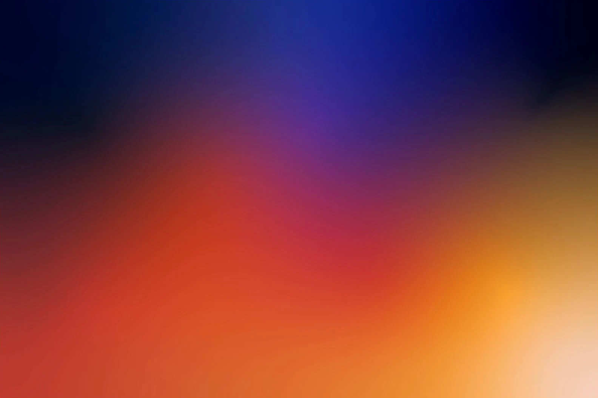

Strategy
Juno, markanızı neyin değerli kıldığını ve bundan sonra nereye gidebileceğini ortaya çıkarır. Net bir konumlandırma ve odaklı bir iletişim stratejisi, her kararı daha sağlam bir zemine oturtur.

Kadim bir isim. Meraklı bir ruh. Mitolojiden Jüpiter’in keşfine uzanan Juno, bizi alışılmışın ötesine bakmaya davet ediyor.
Biz de bu ruhu 15 yılı aşkın deneyimimiz, taze bakış açımız ve olasılıkları gerçeğe dönüştüren zanaatımızla markalara taşıyoruz.
Juno, markanızı neyin değerli kıldığını ve bundan sonra nereye gidebileceğini ortaya çıkarır. Net bir konumlandırma ve odaklı bir iletişim stratejisi, her kararı daha sağlam bir zemine oturtur.
Juno, özgün kimlikler kurar ve onları en küçük ayrıntıya kadar taşır. Ambalajdan faaliyet raporlarına kadar, markanızın net, tutarlı ve tamamen size özgü görünmesini sağlar.
Juno, mesajınızı dikkat çeken ve akılda kalan fikirlere dönüştürür. Tek bir güçlü konsept, kampanyanızı tüm kanallarda birbirine bağlar.
Juno, markanıza insanların tanıdığı ve etkileşime geçmek istediği bir ses kazandırır. Planlı hikâyelerden anlık sohbetlere, iletişiminizi güncel ve bütünlüklü tutar.
Juno, hikâyenizi görüntü, hareket ve sesle hayata geçirir. Marka filmlerinden kısa animasyonlara, insanları durduran, bir şey hissettiren ve akılda kalan işler üretir.
Juno, markanızı keşfetmeyi ve onunla etkileşime geçmeyi kolaylaştıran dijital deneyimler yaratır. Sezgisel web sitelerinden arama motoru ve performans çalışmalarına, özenli tasarımı iş hedeflerinizle buluşturur.
On beş yılı aşkın süre boyunca üretmek, sorgulamak ve yeniden başlamak.
Boş bir sayfayı, bir markanın “benim” diyebileceği bir dünyaya dönüştürmek.
Juno, deneyimli zihinleri yerinde duramayan bir yaratıcı enerjiyle buluşturur. Ayrıntıyı gören, kültürü hisseden ve bir fikrin ne zaman daha ileri taşınmayı hak ettiğini sezen bir ekip.
Strateji işe amaç verir. Tasarım ona karakter katar.
Yakın iş birliği ise onu hayata geçirir.
Her kararda deneyim var. Her yeni başlangıçta ise ilk eskizin heyecanı.
Bir sanatçının gözü, bir minimalistin sezgisi. Caner 2010’dan bu yana ajanslarda fikirlere şekil veriyor, büyük global projelerde yer alıyor ve markalara karakter katan ayrıntıları buluyor. Roma heykelinden, ay ışığında yürüyüşlerden ve müzikten ilham alıyor, her brife merakla yaklaşıyor. Doğasever bir vegan, iki kız babası ve onların gözünde bir film yıldızı.
Yeni bir stüdyo, deneyimli zihinler. On beş yılı aşkın ajans deneyimi, Juno’nun düşünme, üretme ve birlikte çalışma biçimine yön veriyor.
Merakla birbirine bağlanan on iki farklı kişilik. Farklı yetenekler ve bakış açıları, her markaya daha zengin bir perspektif kazandırmak için bir araya geliyor.
Strateji, tasarım, yaratıcılık, içerik, hareket ve dijital. Birbirine bağlı altı disiplin, bir fikri ilk kıvılcımından dünyadaki yerine kadar taşıyor.
Büyük resim, en küçük ayrıntısına kadar. Juno marka stratejisini, iletişimi ve deneyimi birbirine bağlar, böylece her temas noktası aynı hikâyenin parçası gibi hissettirir.
Yeni bir marka, yeni bir hedef ya da şekillenen bir fikir.
Her olasılık bir sohbetle başlar.